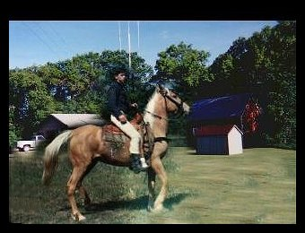

I am 65 years old,and retired, due to an automobile accident
a few years ago . I really enjoy life, and have kept busy by restoring early
John Deere lawn tractors, wrecked motorcycles, a couple of old pickups, doing yard work, and computer stuff. Prior to my accident
I was a HVAC technician in southern Minnesota. I was divorced in 1987, and moved to Mpls, Mn.
In November of 1990 I was hit head-on by a drunk driver... driving on the wrong side of the
freeway. I was very fortunate as I only suffered injuries to my right ankle and foot. The injuries
were serious enough to prevent me from returning to work even after numerous surgeries.
Since I am originally from Northern Minnesota, I returned here to settle in........
.  Today I get along quite well,
and don't suffer any noticeable discomforts... most of the time. I have been happily remarried since
1996 to a great lady. I am able to do some hobbies, and most of the things that are required to maintain
our home. I usually rebuild one or two tractors a year, keep the yard looking great, and sneak in some
fishing. I also now have Congestive heart failure, and as of late.. SVT, but do ok as long as I remember to take
my meds. I am currently doing quite well.
(Up date) I am now 78, we have sold our home and moved into a senior apartment building,
so my activities are somewhat limited now.
I am going to star updating these pages, since it has been quite some time since I have!
CHUCK